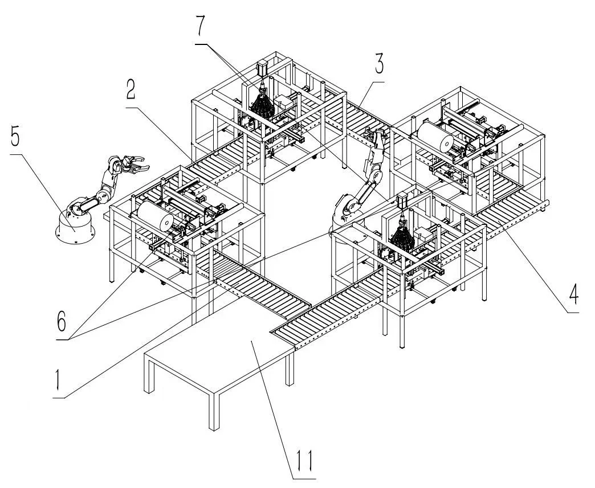
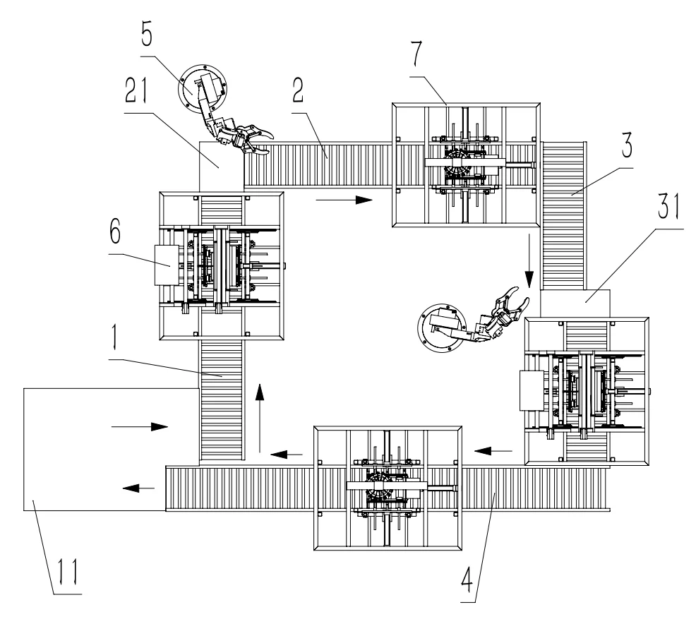

工程设计 · 自动化设备 · 工程方案
双层自动化包装系统
Dual-Layer Automated Packaging
将内袋套袋、装料、扎口、转移与外袋封装串联为一条双层包装流程。

项目概览
流程组织
箱体先套入内袋并接收物料。内袋扎口后，机械臂提起已封口的内袋，待箱体完成外袋套袋，再将内袋放入外袋中，最后完成外袋扎口。
系统布置
系统通过滚筒输送线连接装袋与扎口工位，由机械臂负责工位间的内袋转移。图示为设计方案的设备布置。
项目图稿


工程设计 · 自动化设备 · 工程方案
Dual-Layer Automated Packaging
将内袋套袋、装料、扎口、转移与外袋封装串联为一条双层包装流程。
箱体先套入内袋并接收物料。内袋扎口后，机械臂提起已封口的内袋，待箱体完成外袋套袋，再将内袋放入外袋中，最后完成外袋扎口。
系统通过滚筒输送线连接装袋与扎口工位，由机械臂负责工位间的内袋转移。图示为设计方案的设备布置。

